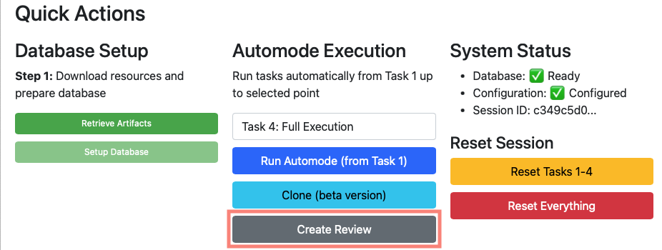
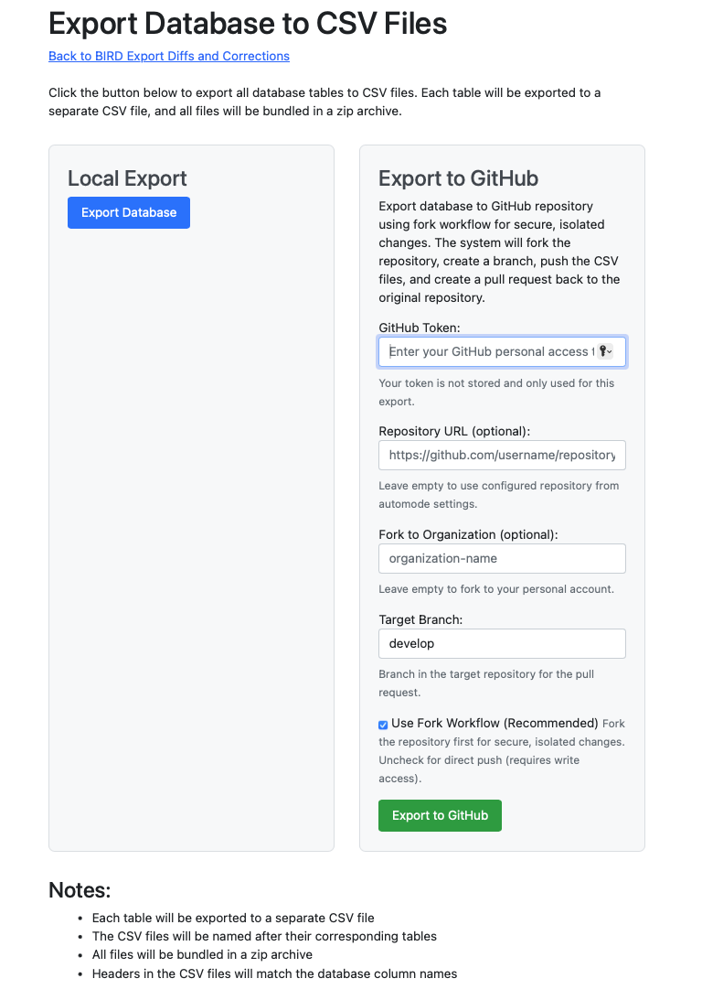

Eclipse Free BIRD Tools provides seamless GitHub integration for creating pull requests with your processed regulatory data and transformations.
Overview
Pull requests in Eclipse Free BIRD Tools allow you to share processed regulatory data and transformations, submit work for peer review and approval, maintain secure isolated development workflows, and contribute to collaborative regulatory reporting projects.
Prerequisites
Before creating pull requests, ensure you have your database ready and configuration completed. You need access to the target GitHub repository with a personal access token that has repository permissions. It is recommended to complete your workflow processing tasks before creating a pull request.
Quick Actions: Create Review (Automated)
The recommended approach for creating pull requests is to use the automated "Create Review" feature after completing your workflow tasks.

The "Create Review" button appears in Quick Actions when your database setup is complete, configuration is saved, workflow tasks have been executed, and the system is ready for review submission. To use this feature, first complete executing Tasks 1-4 or your desired endpoint. Verify that your database and configuration show ready status. Then click "Create Review" located in the Quick Actions Automode Execution section. The system will automatically handle the fork creation, branch setup, and pull request submission.
When you click "Create Review", the system automatically creates a secure fork of the target repository, generates a new branch for your changes, exports your processed data and transformations, commits the changes and pushes them to your fork, and creates a pull request back to the original repository.
Manual Export: Database to CSV Files
For advanced users who need more control over the export process, you can use the manual export functionality.

To access the export functionality, navigate to "Export Database to CSV Files" and choose the "Export to GitHub" option from the right panel. Then configure your GitHub settings as needed.
GitHub Configuration
You need to provide a GitHub token for authentication, which is your personal access token with repository permissions. The token is not stored and is only used for this export. Ensure your token has fork, push, and pull request creation rights.
You can optionally specify a custom repository URL if different from your configuration settings. Leave this empty to use the repository from your automode settings. If you're working in an organizational context, you can specify an organization name for the fork. Leave this empty to fork to your personal account. The target branch defaults to "develop" but you can specify an alternative branch if required.
Fork Workflow
The fork workflow is recommended for security. When enabled, it creates an isolated fork where you can work without affecting the original repository. This approach doesn't require direct write access to the main repository and ensures all changes go through a review process before integration. The system automatically handles fork creation, and repository maintainers can review and approve changes through the pull request.
Export Process
To export your data, first enter your GitHub token and configure any optional settings like repository URL or organization fork. Click "Export to GitHub" to start the process. The system will automatically create a fork if needed, generate CSV files from your database tables, create a new branch, commit the files, and open a pull request. You'll receive a success message with a direct link to the created pull request.
The export creates individual CSV files for each database table, with column names included as headers. All files are bundled in a zip archive and uploaded to your fork with a descriptive commit message.
Best Practices
Always use the fork workflow for isolated, secure development. Complete your workflow tasks before creating pull requests. Limit your GitHub token permissions to the minimum required for the operation. For routine submissions, use the "Create Review" feature in Quick Actions. Include descriptive commit messages and pull request descriptions to help reviewers understand your changes.
Troubleshooting
If you encounter authentication issues, verify that your token has the correct permissions, check the token expiration date, and ensure you're using the token for the correct GitHub account. For repository access problems, verify the repository URL is correct, confirm you have read access, and check if the repository is private. If fork creation fails, ensure you don't already have a fork of the repository, verify your GitHub account has forking permissions, and check if the organization allows forking. For export failures, verify database connectivity and integrity, check system resources and network connectivity, and try exporting smaller datasets if the process times out.